IoT and Security
by Eugene Teo & Sayanee Basu
Use ⬅️ ➡️ keys to navigate these slides
Fun with IoT
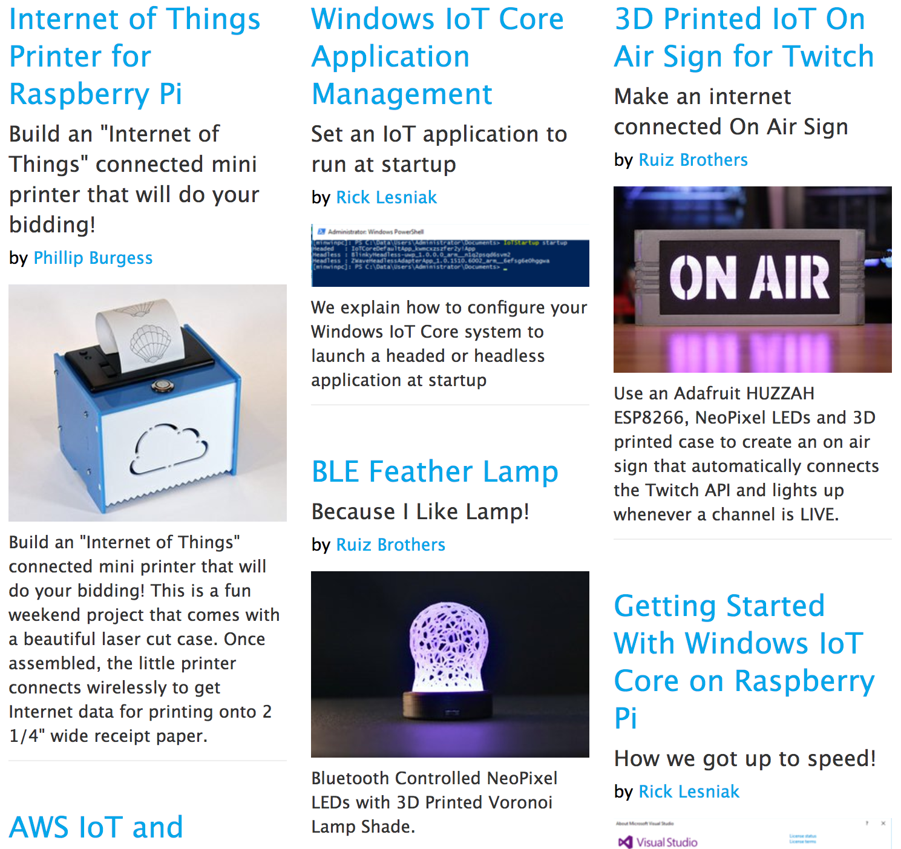 https://learn.adafruit.com/search?q=iot&Fun with IoT
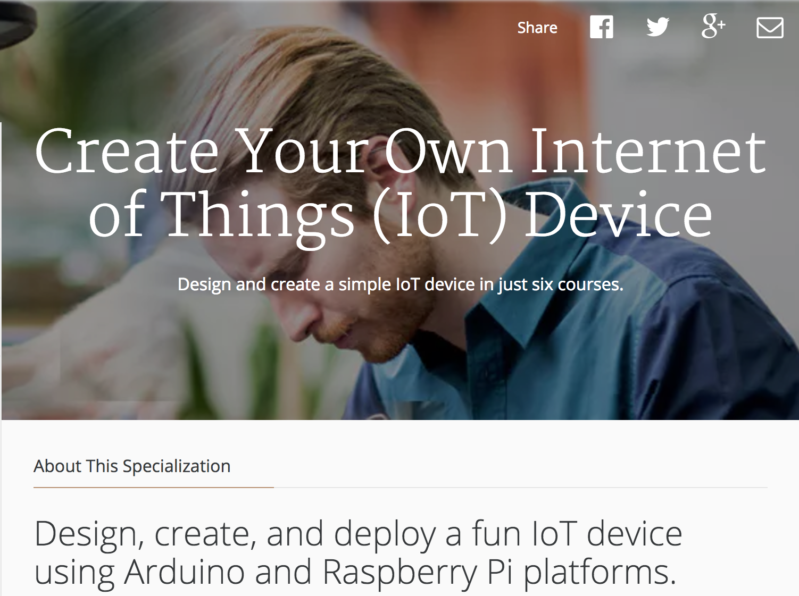 https://www.coursera.org/specializations/iotFun with IoT
[...]
require 'net/telnet'
coffee_machine_ip = '10.10.42.42'
password = '1234'
password_prompt = 'Password: '
delay_before_brew = 17
delay = 24
sleep delay_before_brew
con = Net::Telnet.new('Host' => coffee_machine_ip)
con.cmd('String' => password, 'Match' => /#{password_prompt}/)
con.cmd('sys brew')
sleep delay
con.cmd('sys pour')
con.closeFun with IoT
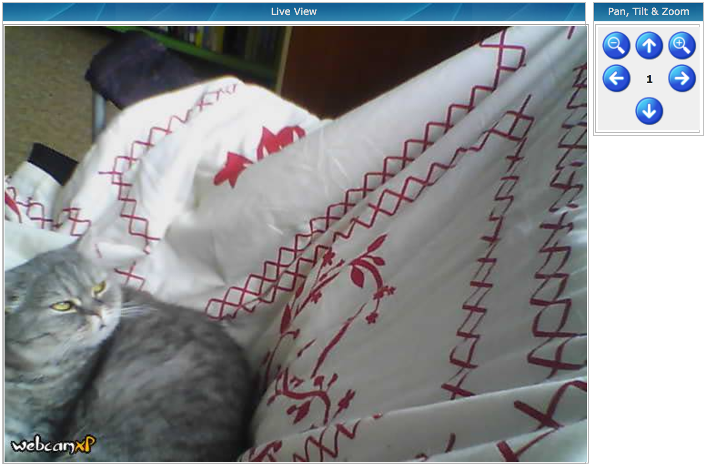 hxxp://80.234.37.94/If IoT Is so Fun, Why Do We Care about Security?
(Not) Fun with IoT
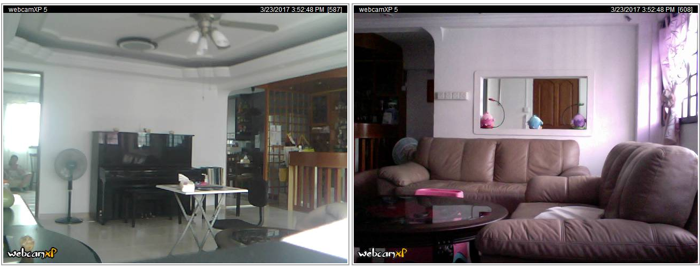 https://www.shodan.io/(Not) Fun with IoT
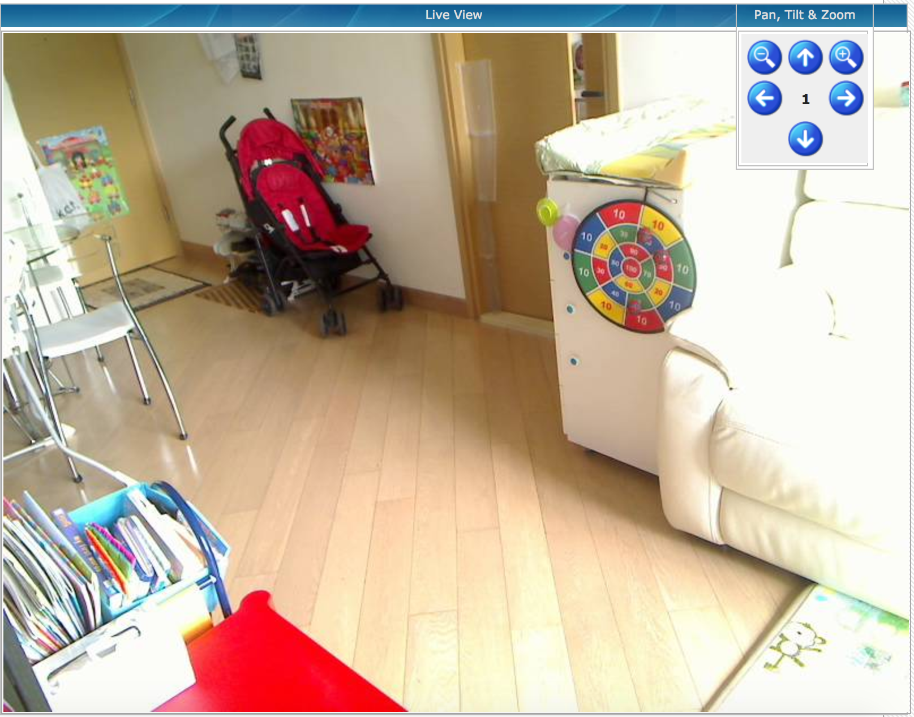 https://www.shodan.io/(Not) Fun with IoT
 https://www.shodan.io/
https://www.shodan.io/
What Drives the Modern Day Attacks?
What Drives the Modern Day Attacks?
| Traditional malware | Hacktivism | Targeted threat | |
|---|---|---|---|
| Target | Widespread, infecting anyone | Organizations related to geopolitical tensions | Specific organization or multiple organizations within a specific industry |
| Attacker | Individuals or small groups | Individuals or networks of (anonymous) activists | Attackers with time, resources and skills to design and execute organized attacks |
What Drives the Modern Day Attacks?
| Traditional malware | Hacktivism | Targeted threat | |
|---|---|---|---|
| Goal | For financial gains | Drive political agendas | Steal sensitive info or disrupt systems |
| Approach | Banking Trojans, ransomware, clickjacking | DDoS, defacement, social media hacks | Espionage, sabotage |
The Motivations Will Be/Are Similar for IoT attacks
IoT Ransomware
IoT ransomware is not about holding your data hostageDevices from pacemakers to cars could be rendered useless by ransomware infections 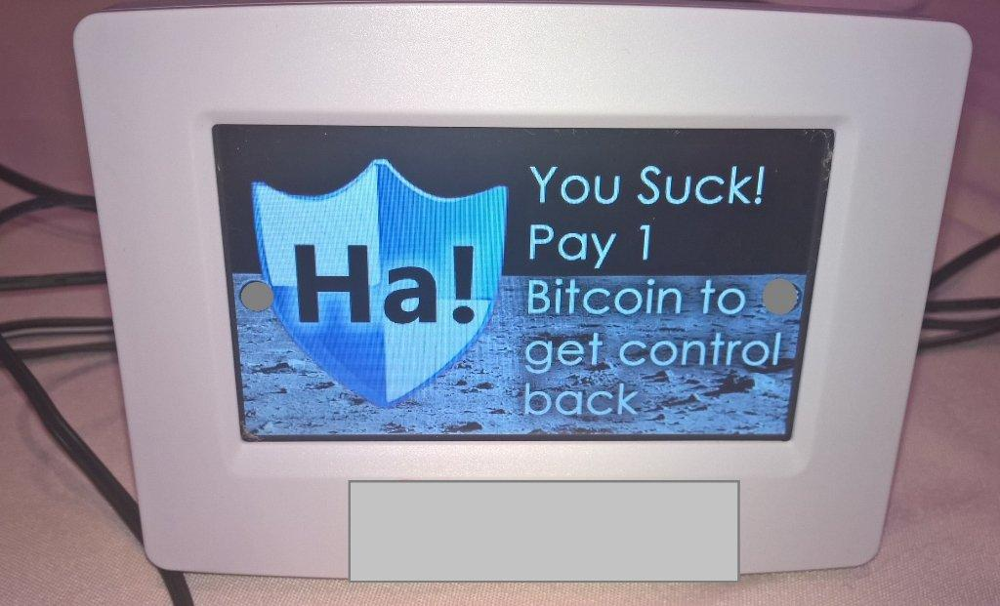
IoT Ransomwear
IoT Ransomware

But IoT Security Is Not Just about the Device!
It's about the IoT Ecosystem!
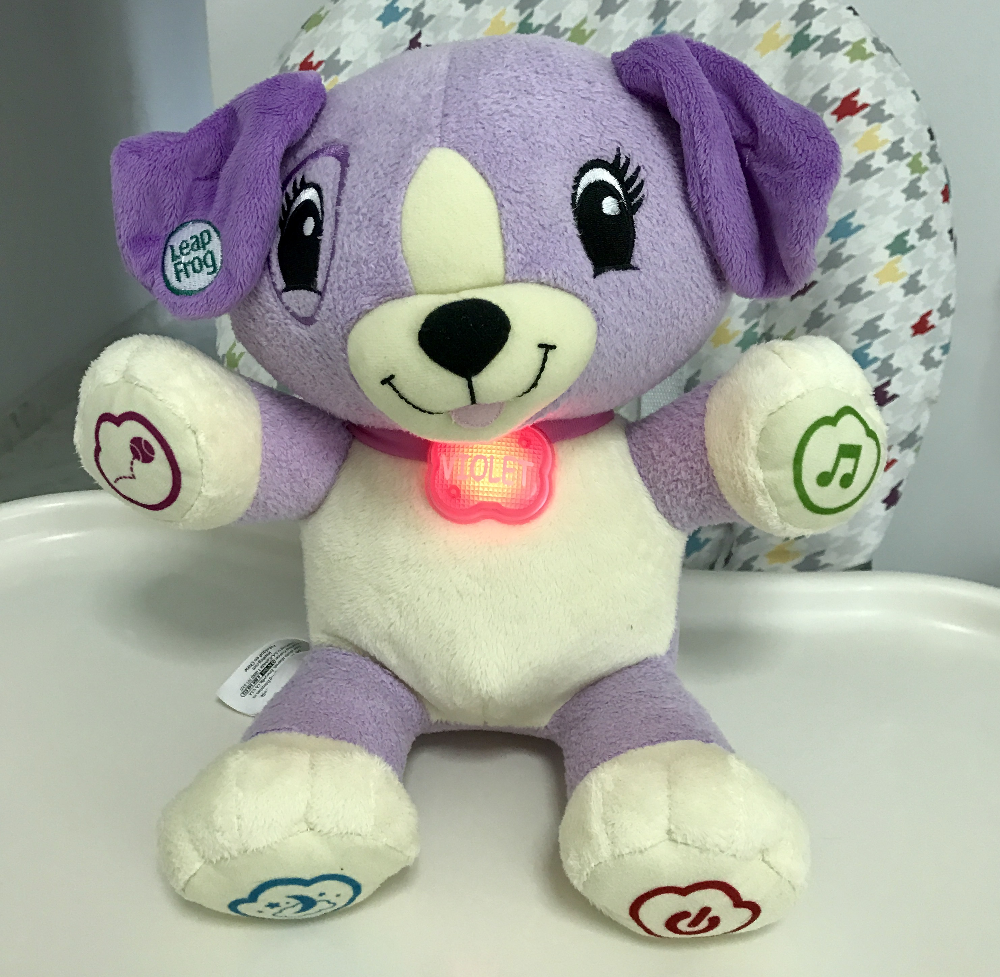Customize My Pal Violet to say out your child's name!
IoT Data Breach
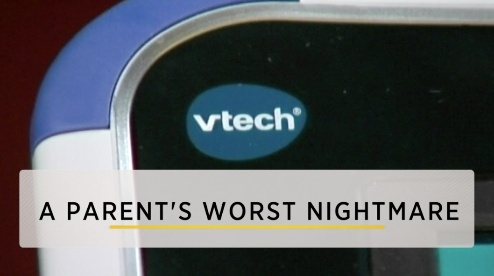"A cyber attack on digital toymaker VTech Holdings exposed the data of 6.4 million children, the company said on Tuesday, in what experts called the largest known hack targeting youngsters."
Press release: Data Breach on VTech Learning Lodge
IoT DDoS
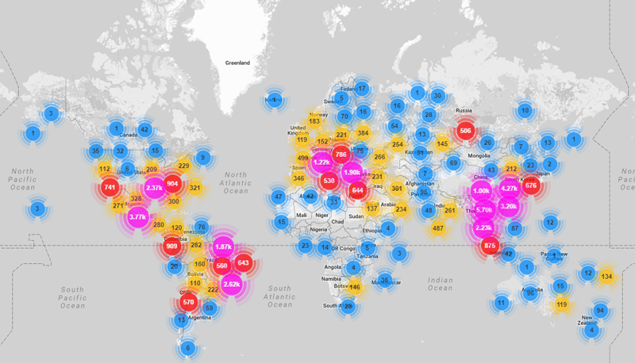"Mirai-infected devices [...] mostly CCTV cameras [...] Other victimized devices included DVRs and routers."
"Using a hit-and-run tactic, the attack peaked at 280 Gbps and 130 Mpps, both indicating a very powerful botnet."
Mirai Is Still Active
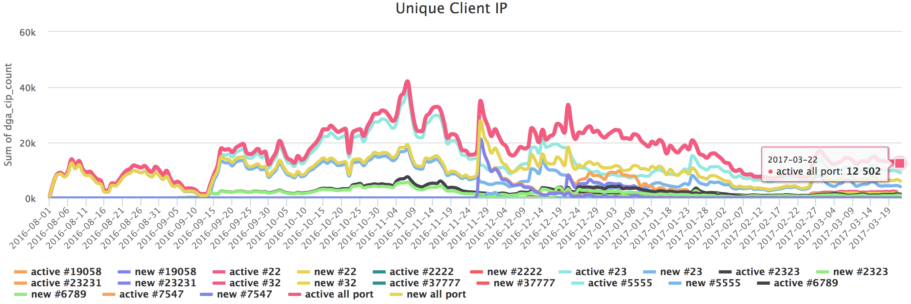IoT Surveillance
Aka Weeping Angel.How Can We Improve Security?
Avoid Problems Repeatedly Seen in Iot Devices
- Use SSL for connections to the IoT device or the cloud
- Provide mutual authentication between the client and the server
- Enforce and use strong passwords
- Support 2FA for IoT cloud interfaces
- Protect against account harvesting, and implement account lockout
- Proper vulnerability management, and actively patch vulnerabilities found or reported
- Provide signed or encrypted firmware updates
Review the OWASP Internet of Things Top Ten Project
- I1 Insecure Web Interface
- I2 Insufficient Authentication/Authorization
- I3 Insecure Network Services
- I4 Lack of Transport Encryption
- I5 Privacy Concerns
- I6 Insecure Cloud Interface
- I7 Insecure Mobile Interface
- I8 Insufficient Security Configurability
- I9 Insecure Software/Fireware
- I10 Poor Physical Security
Adventures with
😴 a lamp 💡
😈 an oven 📺
🙈 a router 📻
Review the OWASP Internet of Things Top Ten Project
- I1 Insecure Web Interface
- I2 Insufficient Authentication/Authorization
- I3 Insecure Network Services
- I4 Lack of Transport Encryption
- I5 Privacy Concerns
- I6 Insecure Cloud Interface
- I7 Insecure Mobile Interface
- I8 Insufficient Security Configurability
- I9 Insecure Software/Fireware
- I10 Poor Physical Security
3 demos
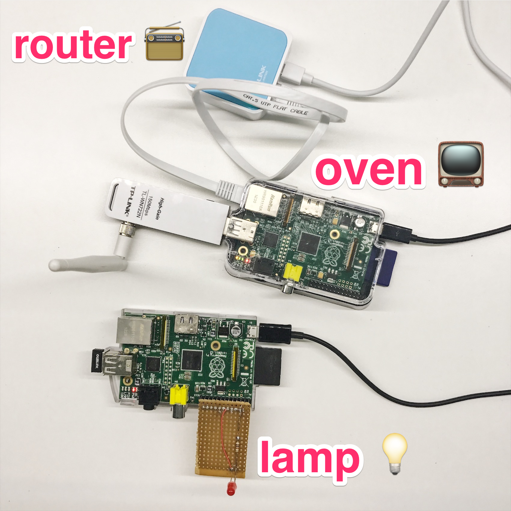Questions to ask 🤔
What's the insecurity?
Why should we care?
What's the fix?
People 🕵🏻👩🏾🔧👨🏻💻👩🏼🏭
security researcher
home owner
engineer / product manager
Demo A
I3 Insecure Network Services
Choose WiFi ISSS614 🔊
Go to URL lamp.local on 📱 💻 🖥
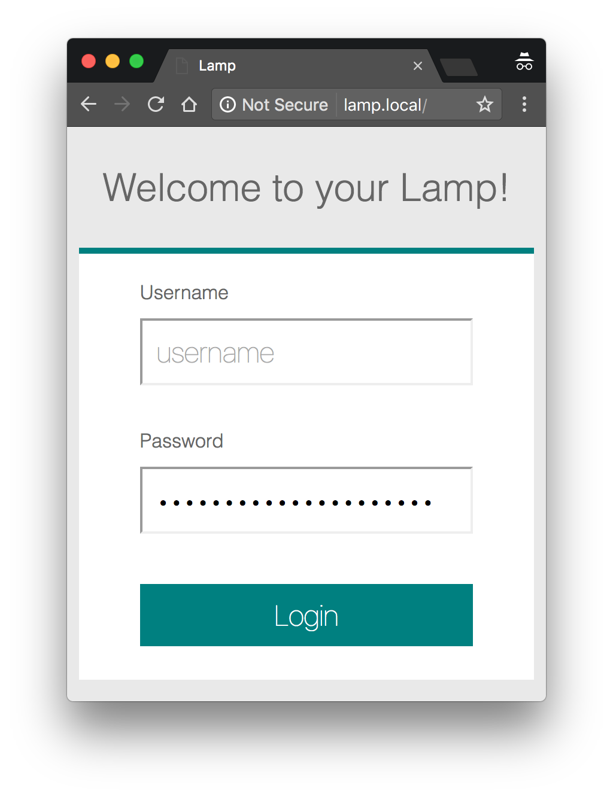Demo A: What's the insecurity?
- insecure open WiFi

Demo A: Why should we care?
- cannot rely on device owner's network
Demo A: What's the fix?
- Use WPA2 encrypted WiFi
- Change router's default password
- Use devices on a separate home network
Demo A (Redux)
I4 Lack of Transport Encryption
Choose WiFi ISSS614 🔊
Go to URL lamp.local on 📱 💻 🖥
Demo A: What's the insecurity?
- lack of security for HTTP connection
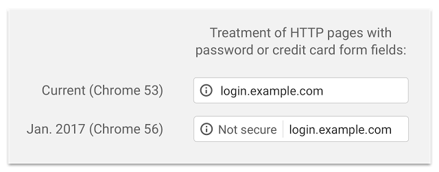
Demo A: Why should we care?
- if you can connect to an encrypted WiFi, you can still eavesdrop
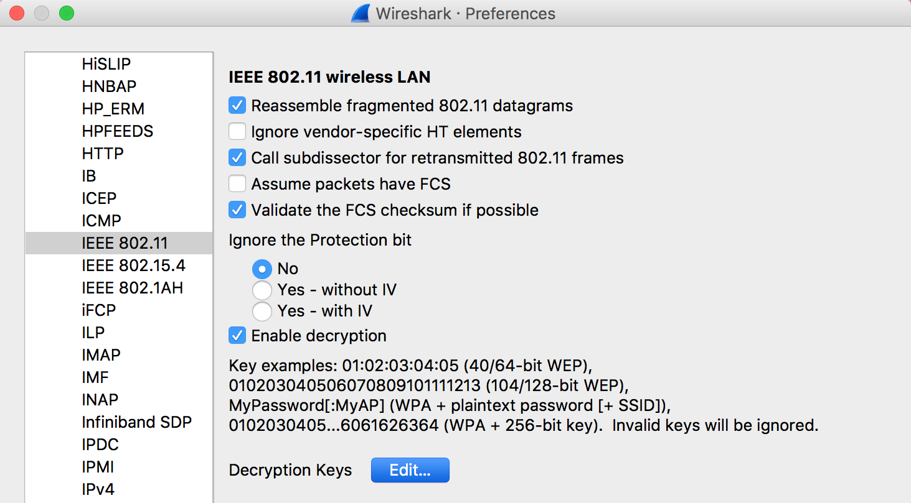
Demo A: What's the fix?
- Use SSL
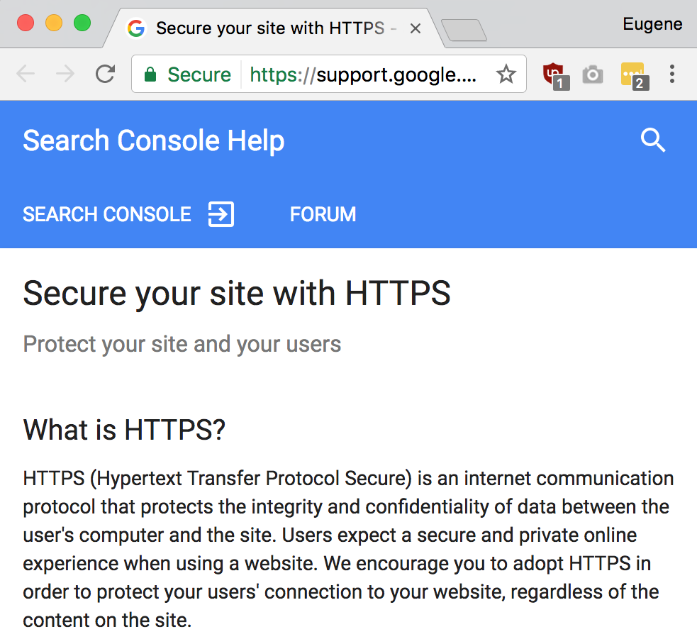
Demo B
I1 Insecure Web Interface
Choose WiFi ISSS614 🔊
Go to URL lamp.local on 📱 💻 🖥
Access oven and sniff packets
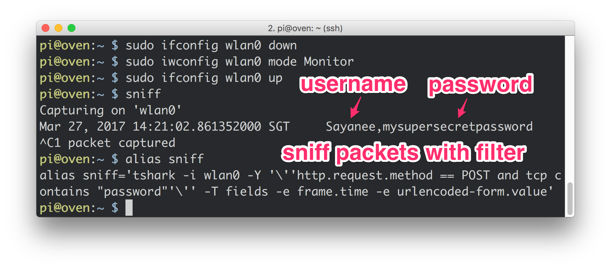Demo B: What's the insecurity?
- username and password are send over clear text
Demo B: Why should we care?
- private data being sniffed
Demo B: What's the fix?
- use TLS / HTTPS
Demo C
I2 Insufficient Authentication/Authorization
Go to URL https://lamp.local on 📱 💻 🖥
Access oven and scan for devices
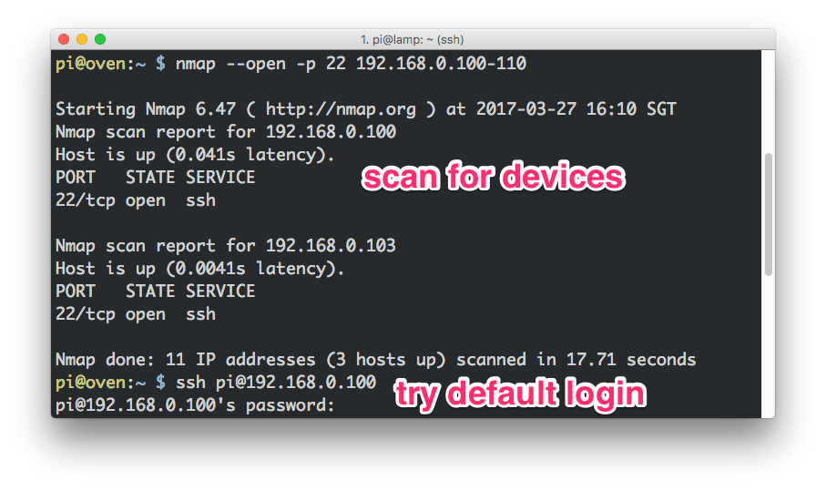Demo C: What's the insecurity?
- default username and password
- full control of the device
#!/bin/bash
while true; do
echo 0 > /sys/class/gpio/gpio18/value
sleep 5
done
Demo C: Why should we care?
- physical infrastructure compromised
Demo C: What's the fix?
- force users to change default login
- have a mechanism to remotely update
Developing IoT products
- work with security researchers from day 1
- build a mechanism to remotely update firmware
- never rely on the security of device's network
- interoperability is challenging
- unique default password for every device
- use state of the art encryption
- design to limit the scope of damage
Thanks!
slides: https://sayan.ee/iot-security-lecture
demo code:
github.com/sayanee/iot-security-lecture/tree/master/demo